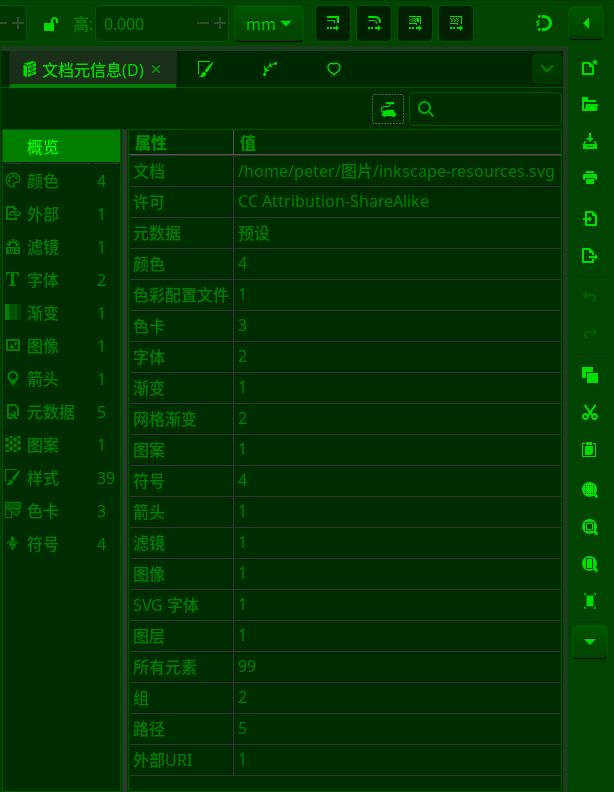

文件>文档元信息
快捷键：无
这里您可以查看当前文档已有的结构信息，包括已经使用的字体、颜色、滤镜、许可证、色彩管理特性文件等等。其中部分内容可以在菜单文件>文档属性中修改。

文件>文档元信息
截图中左侧的概览是简单统计，中心的属性可以查看详细信息。
文档：显示当前文档的名称和路径。
许可：当前文档的采用开源许可协议的类型，可以在菜单文件>文档属性>许可中修改。
元数据：可以在菜单文件>文档属性>元数据中修改。
颜色：文档中已经使用的颜色数量。
色彩配置文件：如果使用了用于色彩管理的icc文件，这里会显示数量，可以在菜单文件>文档属性>颜色中添加或删除。
色卡：如果在填充或描边时使用了色卡，这里会显示色卡数量。
字体：文档已经使用的字体数量。
渐变：文档中已有的渐变对象数量。
网格渐变：文档中已有的网格渐变对象数量。
图案：如果在填充或描边时使用了图案，这里会显示图案数量。
符号：如果使用了菜单对象>符号中的符号元素，这里会显示符号的数量。
箭头：如果在描边样式中使用了箭头，这里会显示箭头的数量。
滤镜：如果使用菜单滤镜中的某个滤镜，这里会显示滤镜的数量。
图像：如果文档嵌入了一些位图，这里会显示位图的数量。
SVG字体：不是指对文字应用了svg字体，而是指在菜单文字>SVG字体编辑器中创建了svg字体对象，那么这里会显示相应的对象的数量。
图层：文档中图层的数量。
所有元素：文档中全部元素的数量总和。
组：文档中组对象的数量。
路径：文档中路径对象的数量。
外部URI：文档中存在的外部链接的数量。有些外部链接可能不是文档内容本身，而是文档的注释信息，存在于文档的属性中，比如许可协议的链接。设定之后，在文件管理器中右键点击此文件，再选择属性，通常会显示许可协议及具体链接。